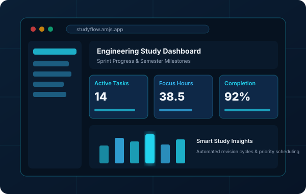
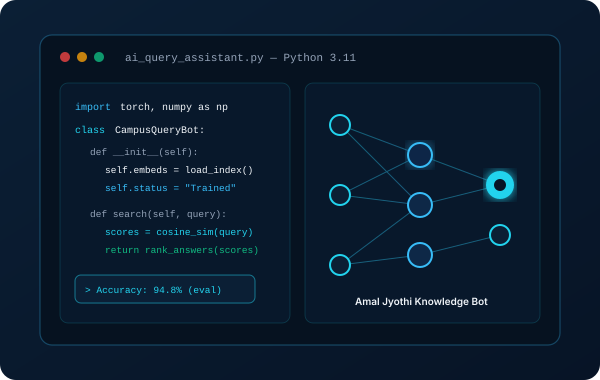
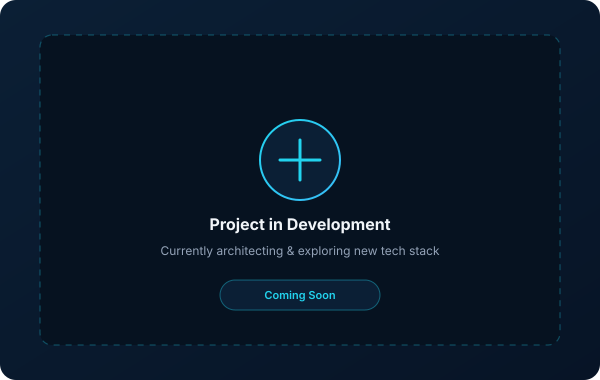

Projects & Engineering Prototypes
A curated collection of student software projects, web applications, and exploratory coding endeavors. Each card features screenshots, technologies, and source code links.

Web ApplicationStudyFlow - Academic Task & Sprint Planner
A modern productivity web dashboard crafted to help engineering students balance semester assignments, laboratory deadlines, and study sprints. Built with modular JavaScript and glassmorphic UI design.

Python & AIAmal Jyothi Campus Query Assistant
A Python-based intelligent query engine that processes campus FAQs, course outlines, and academic regulations using lightweight text embeddings and semantic similarity ranking.

In DevelopmentUpcoming Project (Editable Placeholder)
Ready to be customized with your next software project, coursework build, or hackathon innovation. Update the title, description, and repository links directly in projects.html.
Have a project idea or seeking student collaboration?
I'm always excited to collaborate on new concepts, hackathons, and creative software builds.